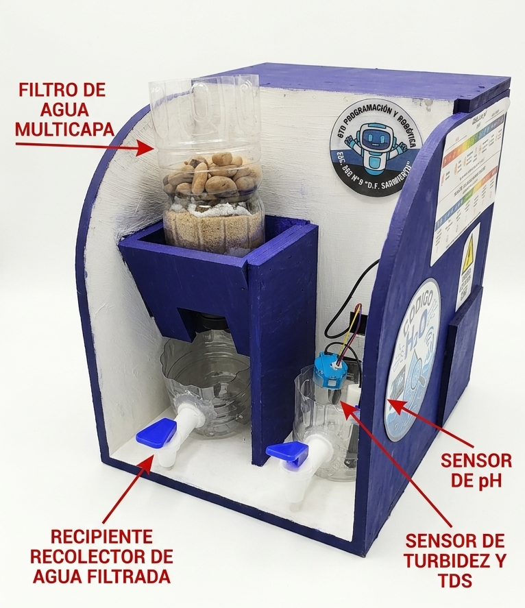
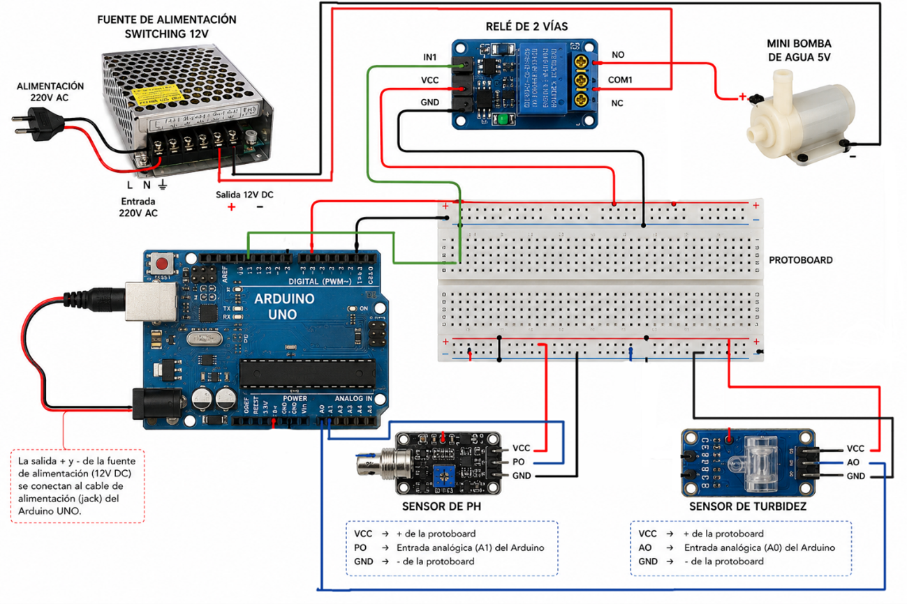

Nuestro Prototipo
Diseño, arquitectura del sistema y esquema electrónico desarrollado para el filtrado y monitoreo de agua.

Estructura Física y Módulos
El prototipo consta de dos módulos principales integrados en una estructura funcional diseñada para procesar y analizar la muestra de agua:
- Filtro Multicapa: Sistema de purificación física que utiliza capas superpuestas de grava, arena y algodón para retener sedimentos y micropartículas.
- Recipientes Recolectores: Cámaras para el almacenamiento del agua prefiltrada y recolección de muestras listas para análisis.
- Sensores de pH y Turbidez: Módulo analítico sumergido en la cámara de prueba que toma lecturas fisicoquímicas continuas.
Circuito Electrónico y Control
La automatización y medición en tiempo real están gestionadas por una arquitectura electrónica basada en la plataforma Arduino:
- Arduino UNO: Microcontrolador principal encargado de procesar las señales analógicas de los sensores y ejecutar la lógica de control.
- Sensor de pH: Electrodo analógico que mide los niveles de acidez o alcalinidad de la muestra de agua.
- Sensor de Turbidez: Módulo óptico que determina la claridad y presencia de sólidos en suspensión.
- Relé de 1 Vía: Módulo de conmutación electromecánica que actúa como interruptor digital para la bomba.
- Bomba de Agua 5V: Actuador hidráulico encargado del flujo y transporte automatizado del agua a través del sistema.
